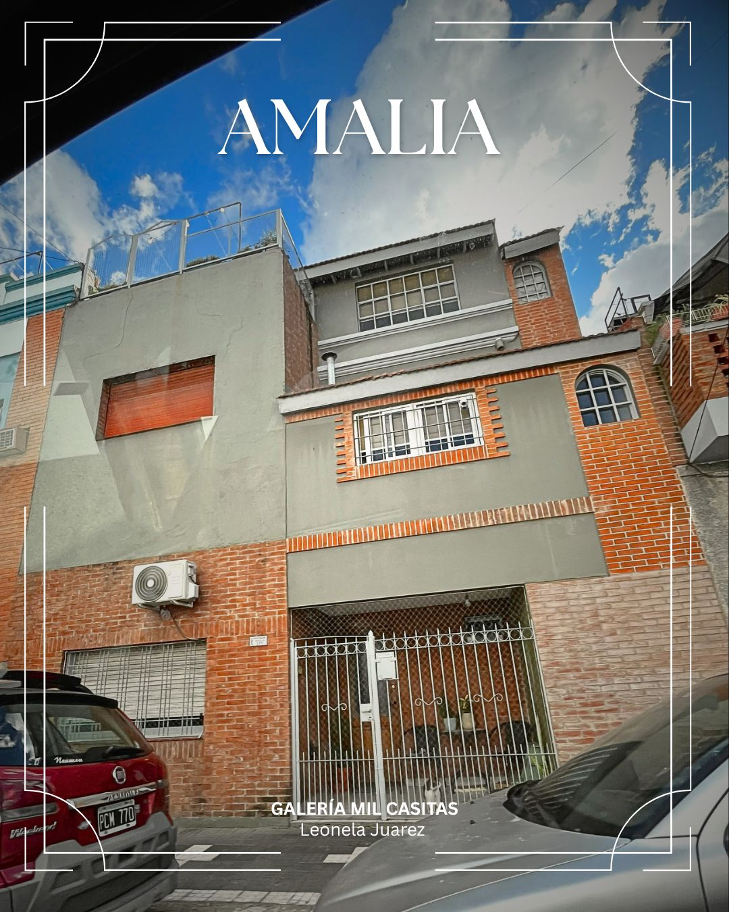
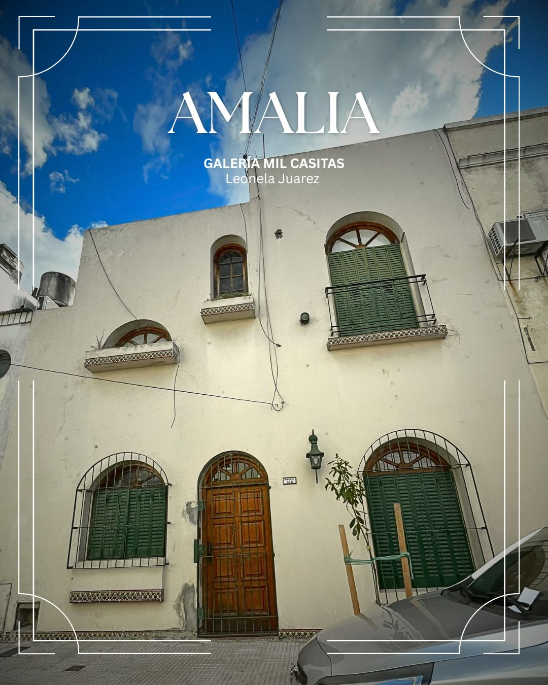
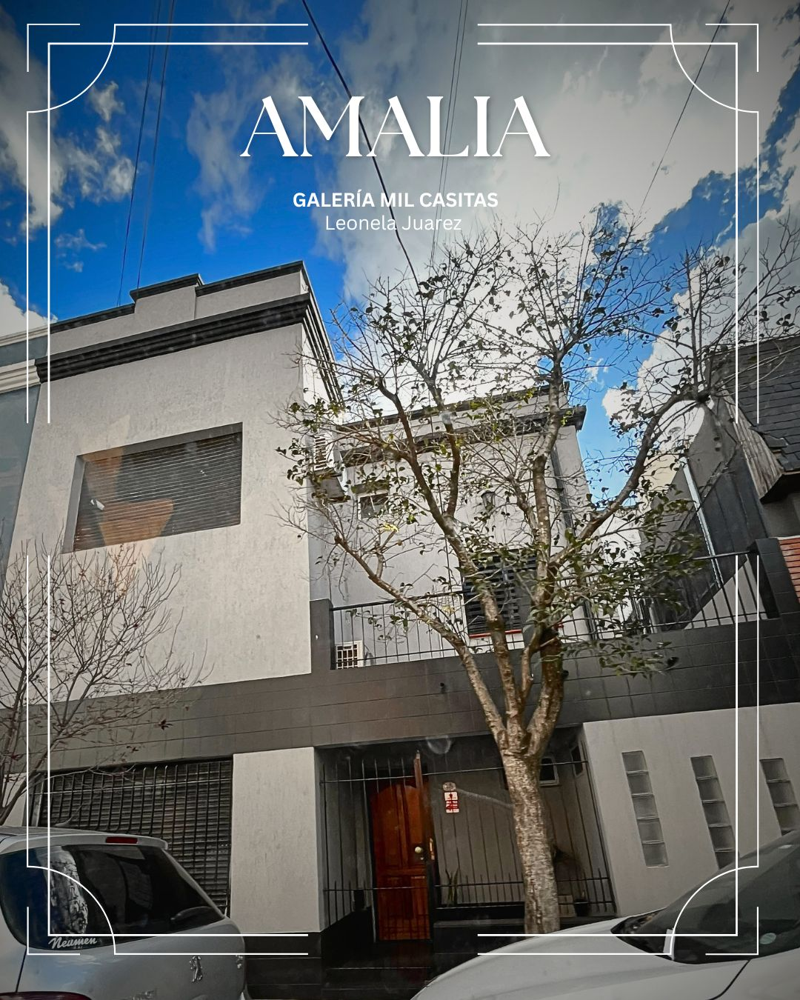

Pasaje Amalia
Este pasaje conserva la arquitectura icónica de casas gemelas con techos a dos aguas y fachadas históricas dentro del barrio de Liniers.
Identidad Barrial y Leyendas Locales
Como gran parte de los pasajes de Buenos Aires, el Pasaje Amalia atesora la memoria oral de sus habitantes y personajes emblemáticos que marcaron su identidad: "Carlitos, el ángel de las golosinas": Uno de los personajes más recordados de la cuadra fue Carlitos, un vecino que atendía un histórico kiosco en la esquina del pasaje y la calle Tuyutí (frente a la plaza). Es evocado con gran cariño por los antiguos residentes debido a su asombrosa memoria para recordar las genealogías de las familias del barrio y por organizar partidos de fútbol callejeros para los chicos del pasaje entre las veredas de Palmar y Tuyutí

Esta casa de dos pisos exhibe una fachada que combina ladrillos rojos a la vista en la planta baja con paredes blancas y detalles de piedra texturizada en el piso superior. Cuenta con múltiples ventanas y una puerta de entrada, algunas con persianas.

Esta propiedad de tres niveles tiene una fachada que combina ladrillos rojos a la vista, paredes grises y piedra texturizada. Presenta una variedad de ventanas, incluyendo una gran ventana central con barras de seguridad y una ventana en forma de arco más pequeña. Un portón metálico blanco y una red de malla aseguran la entrada principal.

Esta casa de dos pisos, pintada de un color crema suave, destaca por sus ventanas arqueadas en ambas plantas. Las ventanas del primer piso tienen jardineras con plantas, y todas están protegidas por rejas de hierro negro. Una puerta de entrada de madera tallada se encuentra en el centro, flanqueada por una lámpara de pared de estilo clásico y una planta en maceta.

Esta casa moderna de tres pisos presenta una fachada limpia de paredes grises y acentos negros. Tiene una gran ventana cuadrada en el primer piso y ventanas más pequeñas con bloques de vidrio en la planta baja. Una puerta de entrada de madera se abre a un pequeño porche protegido por una reja de hierro negro.
Detalles del recorrido: Un paseo arbolado y tranquilo que destaca por mantener viva la estructura urbana original planteada en 1922.
← Volver a la página principal